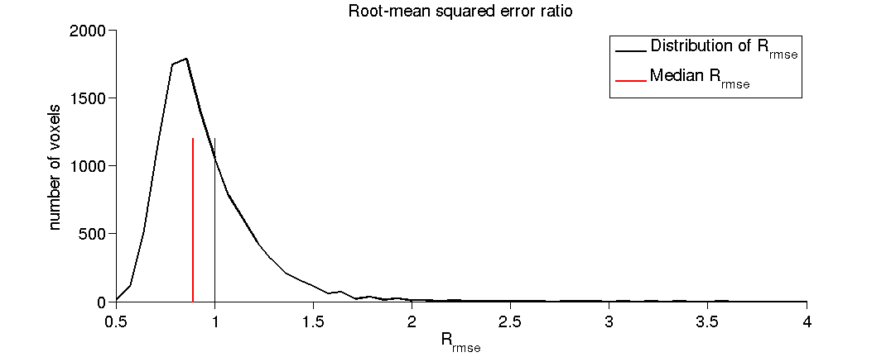
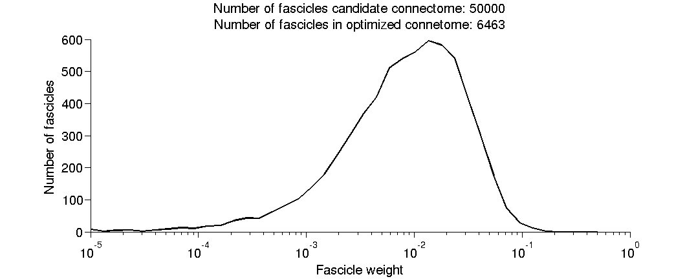
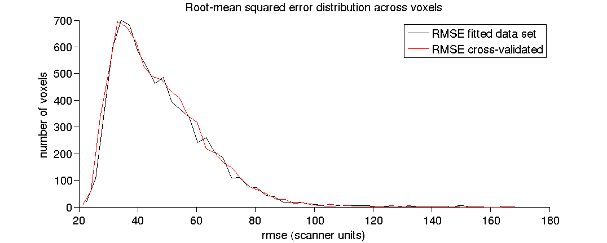
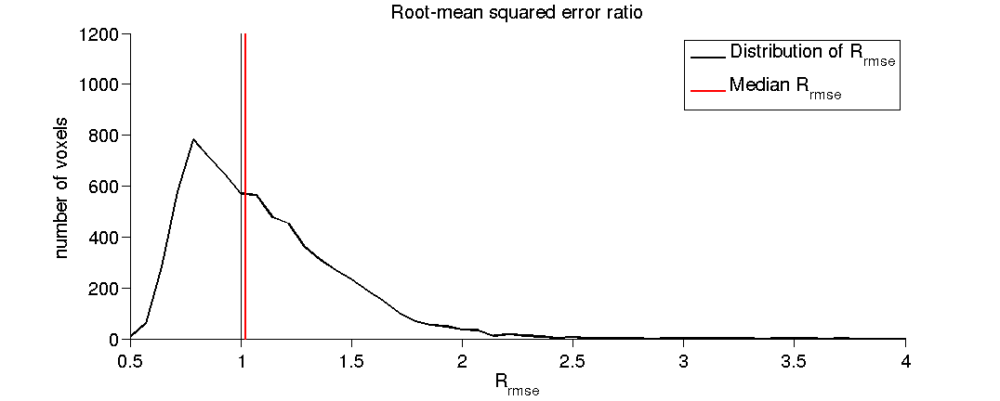
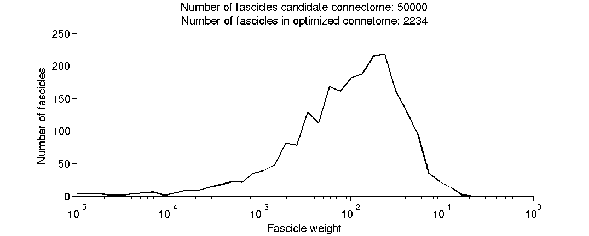
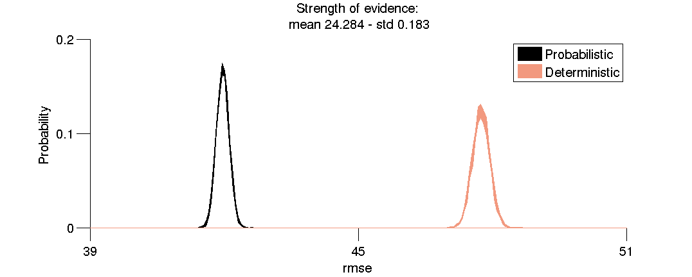
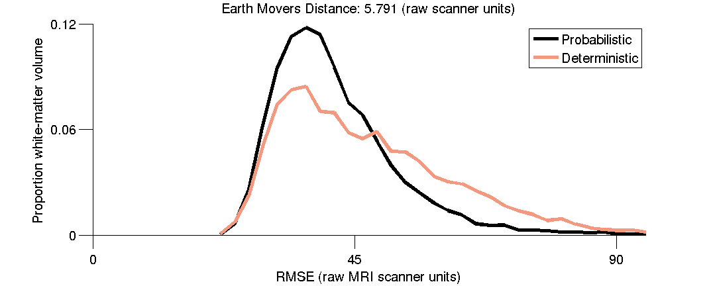

Contents
- Example of initialization and fitting of the LiFE model
- Build the file names for the diffusion data, the anatomical MRI.
- (1) Evaluate the Probabilistic CSD-based connectome.
- (1.1) Initialize the LiFE model structure, 'fe' in the code below.
- (1.2) Fit the model.
- (1.3) Extract the RMSE of the model on the fitted data set.
- (1.4) Extract the RMSE of the model on the second data set.
- (1.5) Extract the Rrmse.
- (1.6) Extract the fitted weights for the fascicles.
- (1.7) Plot a histogram of the RMSE.
- (1.8) Plot a histogram of the RMSE ratio.
- (1.9) Plot a histogram of the fitted fascicle weights.
- Extract the coordinates of the white-matter voxels
- (2) Evaluate the Deterministic tensor-based connectome.
- (2.1) Initialize the LiFE model structure, 'fe' in the code below.
- (2.2) Fit the model.
- (2.3) Extract the RMSE of the model on the fitted data set.
- (2.4) Extract the RMSE of the model on the second data set.
- (2.5) Extract the Rrmse.
- (2.6) Extract the fitted weights for the fascicles.
- (2.7) Plot a histogram of the RMSE.
- (2.8) Plot a histogram of the RMSE ratio.
- (2.9) Plot a histogram of the fitted fascicle weights.
- Extract the coordinates of the white-matter voxels.
- (3) Compare the quality of fit of Probabilistic and Deterministic connectomes.
- (3.1) Find the common coordinates between the two connectomes.
- (3.2) Make a scatter plot of the RMSE of the two tractography models
- (3.3) Compute the strength-of-evidence (S) and the Earth Movers Distance.
- (3.4) Strength of evidence in favor of Probabilistic tractography.
- (3.5) RMSE distributions for Probabilistic and Deterministic tractography.
function [fh, fe] = life_demo()
Example of initialization and fitting of the LiFE model
This demo function illustrates how to: - A - Set up a LiFE structure, identified as 'fe' (fascicle evaluation) in the code below. This model contains a prediction of the diffusion measurements in each white-matter voxel given by the fascicles contained in a tractogrpahy solution, the connectome. Each fascicles makes a prediction about the direction of diffusion in the set of voxels where it travels through. The prediction is generated given the fascicle orientation and position isndie the voxel. Predictions from multiple fascicles in in each voxels are combined to generate a global connectome prediciton for the diffusion signal in large sets of white matter voxels. - B - Fit the LiFE model to compute the weights associated to each fascicle in the connectome. Fascicles in the conenctome contribute differently to predicting the diffusion signal in each voxel. First of all, fascicles make predictions about the diffusion only in voxels where they travel. Secondly, some fascicles have paths that produce better diffusion predictions than others. We use a least-square method to find the contribution of each fascicle to the diffusion signal in the white matter voxels where the fascicles travels. A single weight is assigned to each fascicle representing the global contribution of the fasicle to the signal of all the voxels along its path - we call this fascicle-global. Because multiple fascicles exist in several voxels the set of fascicles weights and fascicles predicitons represents the connectome-global prediction of the diffusion signal within the entire set of white matter voxels. Estimating the fascicle weights allows for evaluating the quality of the tractography solution. Eliminating fascicles that do not contribute to predicting the diffusion signal (they have assigned a zreo-weight). Finaly, the root-mean-squared error (RMSE) of the model to the diffusion data - the model prediction error - is used to evaluate the model prediction quality, compare different tractography models and to perform statistical inference on the on properties of the connectomes. - C - Compare two different connectome models. This demo will show how to compare two different conenctome models by using the diffusion prediction error (the Root-Mean-Squared Error, RMSE). We report the example of two conenctomes one generated using Constrained-spherical deconvolution (CSD) and probabilistic tractography the other using a tensor model and deterministic tractography - D - Not Implemented : Performs a virtual lesion. - Note - The example connectomes used for this demo comprise a portion of the right occiptial lobe of an individual human brain. LiFE utilizes large-scale methods to solve the foward model. The software allows for solving connectomes spanning the entire white-matter of idnvidual brains. The size of the connectome on the test data set is small enought to allow for testing the code within a few minutes requiring only about 10GB of computer RAM and standard hardaware. This code has been tested with: - Ubuntu 12.04.4 LTS (Precise) - 2.6Ghz i7 Processor and 24GB of RAM. - MatLab Version: 8.0.0.783 (R2012b)
Copyright (2013-2014), Franco Pestilli, Stanford University, pestillifranco@gmail.com.
% Intialize a local matlab cluster if the parallel toolbox is available. % This helps speeding up computations espacially for large conenctomes. feOpenLocalCluster;
[feOpenLocalCluster] Found Matlab parallel cluster open, not intializing.
Build the file names for the diffusion data, the anatomical MRI.
dwiFile = fullfile(lifeDemoDataPath('diffusion'),'pestilli_etal_life_demo_scan1_subject1_b2000_150dirs_stanford.nii.gz'); dwiFileRepeat = fullfile(lifeDemoDataPath('diffusion'),'pestilli_etal_life_demo_scan2_subject1_b2000_150dirs_stanford.nii.gz'); t1File = fullfile(lifeDemoDataPath('anatomy'), 'pestilli_etal_life_demo_anatomy_t1w_stanford.nii.gz');
(1) Evaluate the Probabilistic CSD-based connectome.
We will analyze first the CSD-based probabilistic tractography connectome.
prob.tractography = 'Probabilistic'; fgFileName = fullfile(lifeDemoDataPath('tractography'), ... 'pestilli_et_al_life_demo_mrtrix_csd_lmax10_probabilistic.mat'); % The final connectome and data astructure will be saved with this name: feFileName = 'life_build_model_demo_CSD_PROB';
(1.1) Initialize the LiFE model structure, 'fe' in the code below.
This structure contains the forward model of diffusion based on the tractography solution. It also contains all the information necessary to compute model accuracry, and perform statistical tests. You can type help('feBuildModel') in the MatLab prompt for more information.
fe = feConnectomeInit(dwiFile,fgFileName,feFileName,[],dwiFileRepeat,t1File);
[feConnectomeInit] loading fiber from file: /marcovaldo/frk/git/life/Pestilli_etal_manuscript/data/tractography/pestilli_et_al_life_demo_mrtrix_csd_lmax10_probabilistic.mat [feConnectomeInit] Computing fibers' tensors... Elapsed time is 3.226248 seconds. [fefgGet] Computing fibers/nodes pairing in each voxel.. [fefgGet] Computing nodes-to-voxels.. took: 0.491minutes. [fefgGet] Computing voxels-in-fg.. took: 0.176s. [fefgGet] Computing nodes-in-voxels.. took: 0.172s. [fefgGet] fiber/node pairing completed in: 14.804s. Files loaded: dwi = /marcovaldo/frk/git/life/Pestilli_etal_manuscript/data/diffusion/pestilli_etal_life_demo_scan1_subject1_b2000_150dirs_stanford.nii.gz bvecs = /marcovaldo/frk/git/life/Pestilli_etal_manuscript/data/diffusion/pestilli_etal_life_demo_scan1_subject1_b2000_150dirs_stanford.bvecs bvals = /marcovaldo/frk/git/life/Pestilli_etal_manuscript/data/diffusion/pestilli_etal_life_demo_scan1_subject1_b2000_150dirs_stanford.bvals Files loaded: dwi = /marcovaldo/frk/git/life/Pestilli_etal_manuscript/data/diffusion/pestilli_etal_life_demo_scan2_subject1_b2000_150dirs_stanford.nii.gz bvecs = /marcovaldo/frk/git/life/Pestilli_etal_manuscript/data/diffusion/pestilli_etal_life_demo_scan2_subject1_b2000_150dirs_stanford.bvecs bvals = /marcovaldo/frk/git/life/Pestilli_etal_manuscript/data/diffusion/pestilli_etal_life_demo_scan2_subject1_b2000_150dirs_stanford.bvals LiFE - Building the connectome model... LiFE - Predicting diffusion signal in 10694 voxel... LiFE - Prediction computed in: 23.550s. LiFE - Allocating the model prediction...process completed in 471.978s. LiFE - DONE Building the connectome model.
(1.2) Fit the model.
Hereafter we fit the forward model of tracrography using a least-squared method. The information generated by fitting the model (fiber weights etc) is then installed in the LiFE structure.
fe = feSet(fe,'fit',feFitModel(feGet(fe,'mfiber'),feGet(fe,'dsigdemeaned'),'bbnnls'));
LiFE: Computing least-square minimization with BBNNLS... Running: **** SBB-NNLS **** Iter Obj ||pg||_inf ||x-x*|| ------------------------------------------------------- 0001 1.307919E+09 6.466619E+07 NaN 0002 1.243174E+09 3.585529E+07 NaN 0003 1.208840E+09 2.977730E+07 NaN 0004 1.159646E+09 2.635689E+07 NaN 0005 1.147525E+09 2.559348E+07 NaN 0006 1.136161E+09 1.922265E+07 NaN 0007 1.130214E+09 1.730660E+07 NaN 0008 1.110027E+09 1.680250E+07 NaN 0009 1.089190E+09 1.459978E+07 NaN 0010 1.078166E+09 1.276464E+07 NaN 0011 1.038559E+09 5.794384E+07 NaN 0012 1.034712E+09 2.208430E+07 NaN 0013 1.033524E+09 9.050799E+06 NaN 0014 1.026760E+09 8.631986E+06 NaN 0015 1.022509E+09 2.021612E+07 NaN 0016 1.021654E+09 8.199957E+06 NaN 0017 1.021025E+09 8.145108E+06 NaN 0018 1.014731E+09 8.096567E+06 NaN 0019 1.001784E+09 3.661682E+07 NaN 0020 1.000342E+09 1.494266E+07 NaN 0021 9.998125E+08 7.208974E+06 NaN 0022 9.980974E+08 5.713491E+06 NaN 0023 9.951437E+08 2.003736E+07 NaN 0024 9.947451E+08 7.085062E+06 NaN 0025 9.944719E+08 5.389950E+06 NaN 0026 9.924290E+08 5.367824E+06 NaN 0027 9.861289E+08 3.046906E+07 NaN 0028 9.856522E+08 5.297671E+06 NaN 0029 9.852687E+08 4.530251E+06 NaN 0030 9.833146E+08 4.267369E+06 NaN 0031 9.824782E+08 5.532911E+06 NaN 0032 9.820785E+08 4.150418E+06 NaN 0033 9.818460E+08 4.125086E+06 NaN 0034 9.751396E+08 4.110650E+06 NaN 0035 9.738408E+08 9.077890E+06 NaN 0036 9.733680E+08 1.010801E+07 NaN 0037 9.732383E+08 5.176729E+06 NaN 0038 9.762260E+08 3.365940E+06 NaN 0039 9.716284E+08 2.547585E+07 NaN 0040 9.712928E+08 3.882891E+06 NaN 0041 9.710759E+08 3.203070E+06 NaN 0042 9.688401E+08 3.183377E+06 NaN 0043 9.685904E+08 3.286071E+06 NaN 0044 9.681592E+08 2.890947E+06 NaN 0045 9.678729E+08 2.845161E+06 NaN 0046 9.621745E+08 2.811581E+06 NaN 0047 9.619519E+08 6.238817E+06 NaN 0048 9.616957E+08 4.309485E+06 NaN 0049 9.614659E+08 3.305908E+06 NaN 0050 9.610926E+08 2.187766E+06 NaN 0051 9.609719E+08 2.247655E+06 NaN 0052 9.608367E+08 1.570873E+06 NaN 0053 9.607682E+08 2.947223E+06 NaN 0054 9.606375E+08 1.546544E+06 NaN 0055 9.604227E+08 1.528272E+06 NaN 0056 9.599080E+08 1.494245E+06 NaN 0057 9.587330E+08 1.646919E+07 NaN 0058 9.585722E+08 5.737623E+06 NaN 0059 9.584041E+08 4.269265E+06 NaN 0060 9.581604E+08 3.585277E+06 NaN 0061 9.581161E+08 2.719826E+06 NaN 0062 9.580108E+08 1.869510E+06 NaN 0063 9.578532E+08 6.050375E+06 NaN 0064 9.578310E+08 1.017997E+06 NaN 0065 9.577823E+08 1.000609E+06 NaN 0066 9.581825E+08 9.954103E+05 NaN 0067 9.569259E+08 1.297705E+07 NaN 0068 9.568947E+08 1.442907E+06 NaN 0069 9.568679E+08 8.345098E+05 NaN 0070 9.566514E+08 8.319305E+05 NaN 0071 9.565919E+08 1.337015E+06 NaN 0072 9.565595E+08 1.573419E+06 NaN 0073 9.565445E+08 1.751876E+06 NaN 0074 9.565027E+08 7.864680E+05 NaN 0075 9.564852E+08 7.736305E+05 NaN 0076 9.563229E+08 7.693740E+05 NaN 0077 9.562957E+08 9.822361E+05 NaN 0078 9.562757E+08 7.192193E+05 NaN 0079 9.562642E+08 7.456113E+05 NaN 0080 9.561133E+08 7.132708E+05 NaN 0081 9.559795E+08 6.868294E+05 NaN 0082 9.559649E+08 1.640678E+06 NaN 0083 9.559481E+08 2.281374E+06 NaN 0084 9.559365E+08 6.602509E+05 NaN 0085 9.559111E+08 6.584714E+05 NaN 0086 9.555176E+08 6.541630E+05 NaN 0087 9.554840E+08 2.813916E+06 NaN 0088 9.554702E+08 1.397569E+06 NaN 0089 9.554617E+08 8.706310E+05 NaN 0090 9.554427E+08 7.468709E+05 NaN 0091 9.554346E+08 1.080044E+06 NaN 0092 9.554243E+08 5.554830E+05 NaN 0093 9.554168E+08 5.540269E+05 NaN 0094 9.552601E+08 5.528034E+05 NaN 0095 9.551597E+08 7.162165E+06 NaN 0096 9.550484E+08 5.574252E+06 NaN 0097 9.550170E+08 2.698502E+06 NaN 0098 9.549932E+08 2.046093E+06 NaN 0099 9.549425E+08 3.935970E+06 NaN 0100 9.549352E+08 9.693352E+05 NaN 0101 9.549180E+08 7.555799E+05 NaN 0102 9.549135E+08 1.131412E+06 NaN 0103 9.549051E+08 1.308309E+06 NaN 0104 9.549017E+08 8.723968E+05 NaN 0105 9.548994E+08 5.034316E+05 NaN 0106 9.548812E+08 3.670025E+05 NaN 0107 9.548766E+08 6.998372E+05 NaN 0108 9.548740E+08 3.512696E+05 NaN 0109 9.548724E+08 3.506403E+05 NaN 0110 9.548449E+08 3.501907E+05 NaN 0111 9.548367E+08 3.418272E+05 NaN 0112 9.548405E+08 6.308415E+05 NaN 0113 9.548295E+08 1.528593E+06 NaN 0114 9.548282E+08 3.407951E+05 NaN 0115 9.548269E+08 3.406979E+05 NaN 0116 9.546963E+08 3.405933E+05 NaN 0117 9.546906E+08 1.418370E+06 NaN 0118 9.546746E+08 1.921842E+06 NaN 0119 9.546708E+08 1.445751E+06 NaN 0120 9.547583E+08 6.442646E+05 NaN 0121 9.546586E+08 4.075085E+06 NaN 0122 9.546569E+08 3.575407E+05 NaN 0123 9.546562E+08 2.916773E+05 NaN 0124 9.546525E+08 2.905436E+05 NaN 0125 9.546511E+08 2.818912E+05 NaN 0126 9.546499E+08 2.790210E+05 NaN 0127 9.546490E+08 2.753583E+05 NaN 0128 9.546482E+08 2.741964E+05 NaN 0129 9.546479E+08 2.724172E+05 NaN 0130 9.546457E+08 2.715859E+05 NaN 0131 9.546454E+08 2.661786E+05 NaN 0132 9.546447E+08 2.654132E+05 NaN 0133 9.546445E+08 2.638853E+05 NaN 0134 9.546436E+08 2.633569E+05 NaN 0135 9.546390E+08 2.612590E+05 NaN 0136 9.566035E+08 2.499422E+05 NaN 0137 9.554660E+08 1.510042E+07 NaN 0138 9.553037E+08 5.826542E+06 NaN 0139 9.550878E+08 4.615684E+06 NaN 0140 9.549339E+08 3.412313E+06 NaN 0141 9.548659E+08 3.090428E+06 NaN 0142 9.548177E+08 3.372325E+06 NaN 0143 9.547826E+08 2.944437E+06 NaN 0144 9.547587E+08 1.505082E+06 NaN 0145 9.547366E+08 1.367243E+06 NaN 0146 9.548708E+08 1.223587E+06 NaN 0147 9.546440E+08 6.046396E+06 NaN 0148 9.546373E+08 1.251820E+06 NaN 0149 9.546333E+08 6.899156E+05 NaN 0150 9.546272E+08 5.133182E+05 NaN 0151 9.546256E+08 5.210804E+05 NaN 0152 9.546251E+08 3.136826E+05 NaN 0153 9.546201E+08 1.137994E+06 NaN 0154 9.546197E+08 1.963965E+05 NaN 0155 9.546194E+08 2.275986E+05 NaN 0156 9.546173E+08 2.128939E+05 NaN 0157 9.546155E+08 5.672008E+05 NaN 0158 9.546151E+08 2.648349E+05 NaN 0159 9.546150E+08 1.526309E+05 NaN 0160 9.546143E+08 1.526752E+05 NaN 0161 9.546140E+08 1.530146E+05 NaN 0162 9.546140E+08 1.530923E+05 NaN 0163 9.546135E+08 2.704254E+05 NaN 0164 9.546134E+08 1.532447E+05 NaN 0165 9.546133E+08 1.532524E+05 NaN 0166 9.546115E+08 1.532604E+05 NaN 0167 9.546113E+08 1.534815E+05 NaN 0168 9.546111E+08 1.534050E+05 NaN 0169 9.546110E+08 1.796172E+05 NaN 0170 9.546110E+08 1.533040E+05 NaN 0171 9.546107E+08 1.532572E+05 NaN 0172 9.546050E+08 1.530805E+05 NaN 0173 9.546079E+08 6.410887E+05 NaN 0174 9.546024E+08 9.074573E+05 NaN 0175 9.546016E+08 7.178098E+05 NaN 0176 9.546017E+08 3.418290E+05 NaN 0177 9.546008E+08 4.553512E+05 NaN 0178 9.546008E+08 1.392320E+05 NaN 0179 9.546007E+08 1.391771E+05 NaN 0180 9.546001E+08 1.390597E+05 NaN 0181 9.546007E+08 1.374120E+05 NaN 0182 9.546001E+08 3.135992E+05 NaN 0183 9.545998E+08 3.636200E+05 NaN 0184 9.545998E+08 1.363430E+05 NaN 0185 9.545997E+08 1.361783E+05 NaN 0186 9.545997E+08 1.356925E+05 NaN 0187 9.545995E+08 1.716984E+05 NaN 0188 9.545994E+08 1.371773E+05 NaN 0189 9.545994E+08 4.871785E+04 NaN 0190 9.545993E+08 4.851467E+04 NaN 0191 9.545993E+08 4.627005E+04 NaN 0192 9.545993E+08 4.522115E+04 NaN 0193 9.545993E+08 7.553992E+04 NaN 0194 9.545993E+08 4.422537E+04 NaN 0195 9.545993E+08 4.396856E+04 NaN 0196 9.545987E+08 4.360215E+04 NaN 0197 9.546010E+08 3.736175E+04 NaN 0198 9.546039E+08 5.593638E+05 NaN 0199 9.545987E+08 1.258238E+06 NaN 0200 9.545986E+08 1.503108E+05 NaN 0201 9.545986E+08 9.476199E+04 NaN 0202 9.545986E+08 7.737394E+04 NaN 0203 9.545985E+08 2.460752E+04 NaN 0204 9.545985E+08 2.197667E+04 NaN 0205 9.545985E+08 3.865351E+04 NaN 0206 9.545985E+08 2.053351E+04 NaN 0207 9.545985E+08 2.056268E+04 NaN 0208 9.545985E+08 2.057528E+04 NaN 0209 9.545985E+08 2.063163E+04 NaN 0210 9.545994E+08 2.020928E+04 NaN 0211 9.545984E+08 3.810580E+05 NaN 0212 9.545984E+08 4.631575E+04 NaN 0213 9.545984E+08 2.125731E+04 NaN 0214 9.545984E+08 1.894896E+04 NaN 0215 9.545984E+08 1.866600E+04 NaN 0216 9.545983E+08 1.851019E+04 NaN 0217 9.545983E+08 1.802152E+04 NaN 0218 9.545983E+08 1.751355E+04 NaN 0219 9.545983E+08 1.751099E+04 NaN 0220 9.545983E+08 1.750111E+04 NaN 0221 9.545983E+08 1.742603E+04 NaN 0222 9.546020E+08 1.717089E+04 NaN 0223 9.546018E+08 7.398353E+05 NaN 0224 9.545985E+08 6.621276E+05 NaN 0225 9.545982E+08 5.163443E+05 NaN 0226 9.545981E+08 2.189606E+05 NaN 0227 9.545980E+08 1.723451E+05 NaN 0228 9.545980E+08 7.894258E+04 NaN 0229 9.545980E+08 7.782025E+04 NaN 0230 9.545980E+08 4.827688E+04 NaN 0231 9.545980E+08 1.581160E+04 NaN 0232 9.545980E+08 7.452975E+03 NaN 0233 9.545980E+08 7.449612E+03 NaN 0234 9.545980E+08 7.446599E+03 NaN 0235 9.545980E+08 7.428032E+03 NaN 0236 9.545980E+08 7.414423E+03 NaN 0237 9.545980E+08 2.374671E+04 NaN 0238 9.545980E+08 7.371639E+03 NaN 0239 9.545980E+08 7.365412E+03 NaN 0240 9.545979E+08 7.355580E+03 NaN 0241 9.545981E+08 3.618382E+04 NaN 0242 9.545981E+08 1.902163E+05 NaN 0243 9.545979E+08 2.015312E+05 NaN 0244 9.545979E+08 2.993021E+04 NaN 0245 9.545979E+08 2.022173E+04 NaN 0246 9.545979E+08 1.916649E+04 NaN 0247 9.545979E+08 8.887401E+03 NaN 0248 9.545979E+08 4.638121E+03 NaN 0249 9.545979E+08 8.301623E+03 NaN 0250 9.545979E+08 3.705061E+03 NaN 0251 9.545979E+08 3.682267E+03 NaN 0252 9.545979E+08 3.654972E+03 NaN 0253 9.545980E+08 4.729992E+03 NaN 0254 9.545982E+08 6.268547E+04 NaN 0255 9.545979E+08 1.998843E+05 NaN 0256 9.545979E+08 9.482112E+03 NaN 0257 9.545979E+08 4.202085E+03 NaN 0258 9.545979E+08 3.338180E+03 NaN 0259 9.545979E+08 3.336885E+03 NaN 0260 9.545979E+08 3.334053E+03 NaN 0261 9.545979E+08 3.504531E+03 NaN 0262 9.545979E+08 6.319085E+03 NaN 0263 9.545979E+08 6.998167E+03 NaN 0264 9.545979E+08 3.193358E+03 NaN 0265 9.545979E+08 3.189586E+03 NaN 0266 9.545979E+08 3.186388E+03 NaN 0267 9.545979E+08 3.094940E+03 NaN 0268 9.545979E+08 5.187398E+03 NaN 0269 9.545979E+08 8.946178E+03 NaN 0270 9.545979E+08 3.082129E+03 NaN 0271 9.545979E+08 3.080241E+03 NaN 0272 9.545979E+08 3.077652E+03 NaN 0273 9.545979E+08 2.977499E+03 NaN 0274 9.545979E+08 2.965755E+03 NaN 0275 9.545979E+08 2.960223E+03 NaN 0276 9.545979E+08 2.956179E+03 NaN 0277 9.545979E+08 2.951984E+03 NaN 0278 9.545979E+08 2.949720E+03 NaN 0279 9.545979E+08 2.941600E+03 NaN 0280 9.545981E+08 2.910159E+03 NaN 0281 9.545979E+08 1.750778E+05 NaN 0282 9.545979E+08 1.995156E+04 NaN 0283 9.545979E+08 2.244861E+03 NaN 0284 9.545979E+08 1.926622E+03 NaN 0285 9.545979E+08 1.924279E+03 NaN 0286 9.545979E+08 1.922280E+03 NaN 0287 9.545979E+08 1.913543E+03 NaN 0288 9.545979E+08 1.910503E+03 NaN 0289 9.545979E+08 1.908445E+03 NaN 0290 9.545979E+08 1.906896E+03 NaN 0291 9.545979E+08 1.902678E+03 NaN 0292 9.545979E+08 1.901029E+03 NaN 0293 9.545979E+08 1.866193E+03 NaN 0294 9.545979E+08 1.864115E+03 NaN 0295 9.545979E+08 1.862195E+03 NaN 0296 9.545979E+08 1.860880E+03 NaN 0297 9.545979E+08 1.849046E+03 NaN 0298 9.545982E+08 1.785784E+03 NaN 0299 9.545980E+08 1.785988E+05 NaN 0300 9.545979E+08 1.356141E+05 NaN 0301 9.545979E+08 8.559631E+04 NaN 0302 9.545979E+08 4.391639E+04 NaN 0303 9.545979E+08 1.517606E+04 NaN 0304 9.545979E+08 3.277346E+03 NaN 0305 9.545979E+08 1.697454E+03 NaN 0306 9.545979E+08 1.192846E+03 NaN 0307 9.545979E+08 1.399884E+03 NaN 0308 9.545979E+08 8.133494E+02 NaN 0309 9.545979E+08 1.757236E+03 NaN 0310 9.545979E+08 7.237174E+02 NaN 0311 9.545979E+08 1.079226E+03 NaN 0312 9.545979E+08 8.863143E+02 NaN 0313 9.545979E+08 8.687135E+02 NaN 0314 9.545979E+08 7.706611E+02 NaN 0315 9.545979E+08 5.766136E+03 NaN 0316 9.545979E+08 1.015045E+03 NaN 0317 9.545979E+08 7.207388E+02 NaN 0318 9.545979E+08 6.814690E+02 NaN 0319 9.545979E+08 6.771672E+02 NaN 0320 9.545979E+08 6.747365E+02 NaN 0321 9.545979E+08 6.712572E+02 NaN 0322 9.545979E+08 6.703572E+02 NaN 0323 9.545979E+08 6.692488E+02 NaN 0324 9.545979E+08 6.686101E+02 NaN 0325 9.545979E+08 6.626161E+02 NaN 0326 9.545979E+08 6.618672E+02 NaN 0327 9.545979E+08 6.610365E+02 NaN 0328 9.545979E+08 6.605902E+02 NaN 0329 9.545979E+08 6.590339E+02 NaN 0330 9.545979E+08 6.318774E+02 NaN 0331 9.545979E+08 3.178729E+04 NaN 0332 9.545979E+08 2.430457E+03 NaN 0333 9.545979E+08 5.873661E+02 NaN 0334 9.545979E+08 5.098380E+02 NaN 0335 9.545979E+08 4.414670E+02 NaN 0336 9.545979E+08 3.915353E+02 NaN 0337 9.545979E+08 5.683945E+02 NaN 0338 9.545979E+08 3.892120E+02 NaN 0339 9.545979E+08 3.885947E+02 NaN 0340 9.545979E+08 3.871112E+02 NaN 0341 9.545979E+08 3.881017E+02 NaN 0342 9.545979E+08 1.015757E+03 NaN 0343 9.545979E+08 3.773934E+02 NaN 0344 9.545979E+08 3.771755E+02 NaN 0345 9.545979E+08 3.768134E+02 NaN 0346 9.545979E+08 3.762473E+02 NaN 0347 9.545979E+08 3.478143E+02 NaN 0348 9.545979E+08 1.871394E+03 NaN 0349 9.545979E+08 6.241280E+02 NaN 0350 9.545979E+08 3.443417E+02 NaN 0351 9.545979E+08 3.440616E+02 NaN 0352 9.545979E+08 3.437179E+02 NaN 0353 9.545979E+08 3.338807E+02 NaN 0354 9.545979E+08 3.306807E+02 NaN 0355 9.545979E+08 3.013458E+03 NaN 0356 9.545979E+08 1.467305E+03 NaN 0357 9.545979E+08 3.249383E+02 NaN 0358 9.545979E+08 3.245461E+02 NaN 0359 9.545979E+08 3.239350E+02 NaN 0360 9.545979E+08 3.234320E+02 NaN 0361 9.545979E+08 3.188395E+02 NaN 0362 9.545979E+08 3.186511E+02 NaN 0363 9.545979E+08 3.184366E+02 NaN 0364 9.545979E+08 3.181635E+02 NaN 0365 9.545979E+08 3.975142E+02 NaN 0366 9.545979E+08 7.252170E+02 NaN 0367 9.545979E+08 8.027556E+02 NaN 0368 9.545979E+08 2.920168E+02 NaN 0369 9.545979E+08 1.756002E+02 NaN BBNNLS status: Success Reason: Relative change in objvalue small enough ...fit process completed in 4.551minutes
(1.3) Extract the RMSE of the model on the fitted data set.
We now use the LiFE structure and the fit to compute the error in each white-matter voxel spanned by the tractography model.
prob.rmse = feGet(fe,'vox rmse');
(1.4) Extract the RMSE of the model on the second data set.
Here we show how to compute the cross-valdiated RMSE of the tractography model in each white-matter voxel. We store this information for later use and to save computer memory.
prob.rmsexv = feGetRep(fe,'vox rmse');
(1.5) Extract the Rrmse.
We show how to extract the ratio between the model prediction error (RMSE) and the test-retest reliability of the data.
prob.rrmse = feGetRep(fe,'vox rmse ratio');
(1.6) Extract the fitted weights for the fascicles.
The following line shows how to extract the weight assigned to each fascicle in the connectome.
prob.w = feGet(fe,'fiber weights');
(1.7) Plot a histogram of the RMSE.
We plot the histogram of RMSE across white-mater voxels.
[fh(1), ~, ~] = plotHistRMSE(prob);

(1.8) Plot a histogram of the RMSE ratio.
As a reminder the Rrmse is the ratio between data test-retest reliability and model error (the quality of the model fit).
[fh(2), ~] = plotHistRrmse(prob);
(1.9) Plot a histogram of the fitted fascicle weights.
[fh(3), ~] = plotHistWeigths(prob); fe = feConnectomeInit(dwiFile,fgFileName,feFileName,[],dwiFileRepeat,t1File);
[feConnectomeInit] loading fiber from file: /marcovaldo/frk/git/life/Pestilli_etal_manuscript/data/tractography/pestilli_et_al_life_demo_mrtrix_csd_lmax10_probabilistic.mat [feConnectomeInit] Computing fibers' tensors... Elapsed time is 3.011867 seconds. [fefgGet] Computing fibers/nodes pairing in each voxel.. [fefgGet] Computing nodes-to-voxels.. took: 0.497minutes. [fefgGet] Computing voxels-in-fg.. took: 0.226s. [fefgGet] Computing nodes-in-voxels.. took: 0.211s. [fefgGet] fiber/node pairing completed in: 14.585s. Files loaded: dwi = /marcovaldo/frk/git/life/Pestilli_etal_manuscript/data/diffusion/pestilli_etal_life_demo_scan1_subject1_b2000_150dirs_stanford.nii.gz bvecs = /marcovaldo/frk/git/life/Pestilli_etal_manuscript/data/diffusion/pestilli_etal_life_demo_scan1_subject1_b2000_150dirs_stanford.bvecs bvals = /marcovaldo/frk/git/life/Pestilli_etal_manuscript/data/diffusion/pestilli_etal_life_demo_scan1_subject1_b2000_150dirs_stanford.bvals Files loaded: dwi = /marcovaldo/frk/git/life/Pestilli_etal_manuscript/data/diffusion/pestilli_etal_life_demo_scan2_subject1_b2000_150dirs_stanford.nii.gz bvecs = /marcovaldo/frk/git/life/Pestilli_etal_manuscript/data/diffusion/pestilli_etal_life_demo_scan2_subject1_b2000_150dirs_stanford.bvecs bvals = /marcovaldo/frk/git/life/Pestilli_etal_manuscript/data/diffusion/pestilli_etal_life_demo_scan2_subject1_b2000_150dirs_stanford.bvals LiFE - Building the connectome model... LiFE - Predicting diffusion signal in 10694 voxel... LiFE - Prediction computed in: 23.617s. LiFE - Allocating the model prediction...process completed in 440.449s. LiFE - DONE Building the connectome model.
Extract the coordinates of the white-matter voxels
We will use this later to compare probabilistic and deterministic models.
p.coords = feGet(fe,'roi coords'); clear fe
(2) Evaluate the Deterministic tensor-based connectome.
We will now analyze the tensor-based Deterministic tractography connectome.
det.tractography = 'Deterministic'; fgFileName = fullfile(lifeDemoDataPath('tractography'), ... 'pestilli_et_al_life_demo_mrtrix_tensor_deterministic.mat'); % The final connectome and data astructure will be saved with this name: feFileName = 'life_build_model_demo_TENSOR_DET';
(2.1) Initialize the LiFE model structure, 'fe' in the code below.
This structure contains the forward model of diffusion based on the tractography solution. It also contains all the information necessary to compute model accuracry, and perform statistical tests. You can type help('feBuildModel') in the MatLab prompt for more information.
fe = feConnectomeInit(dwiFile,fgFileName,feFileName,[],dwiFileRepeat,t1File);
[feConnectomeInit] loading fiber from file: /marcovaldo/frk/git/life/Pestilli_etal_manuscript/data/tractography/pestilli_et_al_life_demo_mrtrix_tensor_deterministic.mat [feConnectomeInit] Computing fibers' tensors... Elapsed time is 2.889912 seconds. [fefgGet] Computing fibers/nodes pairing in each voxel.. [fefgGet] Computing nodes-to-voxels.. took: 0.349minutes. [fefgGet] Computing voxels-in-fg.. took: 0.171s. [fefgGet] Computing nodes-in-voxels.. took: 0.195s. [fefgGet] fiber/node pairing completed in: 14.069s. Files loaded: dwi = /marcovaldo/frk/git/life/Pestilli_etal_manuscript/data/diffusion/pestilli_etal_life_demo_scan1_subject1_b2000_150dirs_stanford.nii.gz bvecs = /marcovaldo/frk/git/life/Pestilli_etal_manuscript/data/diffusion/pestilli_etal_life_demo_scan1_subject1_b2000_150dirs_stanford.bvecs bvals = /marcovaldo/frk/git/life/Pestilli_etal_manuscript/data/diffusion/pestilli_etal_life_demo_scan1_subject1_b2000_150dirs_stanford.bvals Files loaded: dwi = /marcovaldo/frk/git/life/Pestilli_etal_manuscript/data/diffusion/pestilli_etal_life_demo_scan2_subject1_b2000_150dirs_stanford.nii.gz bvecs = /marcovaldo/frk/git/life/Pestilli_etal_manuscript/data/diffusion/pestilli_etal_life_demo_scan2_subject1_b2000_150dirs_stanford.bvecs bvals = /marcovaldo/frk/git/life/Pestilli_etal_manuscript/data/diffusion/pestilli_etal_life_demo_scan2_subject1_b2000_150dirs_stanford.bvals LiFE - Building the connectome model... LiFE - Predicting diffusion signal in 7078 voxel... LiFE - Prediction computed in: 14.127s. LiFE - Allocating the model prediction...process completed in 117.763s. LiFE - DONE Building the connectome model.
(2.2) Fit the model.
Hereafter we fit the forward model of tracrography using a least-squared method. The information generated by fitting the model (fiber weights etc) is then installed in the LiFE structure.
fe = feSet(fe,'fit',feFitModel(feGet(fe,'mfiber'),feGet(fe,'dsigdemeaned'),'bbnnls'));
LiFE: Computing least-square minimization with BBNNLS... Running: **** SBB-NNLS **** Iter Obj ||pg||_inf ||x-x*|| ------------------------------------------------------- 0001 9.970486E+08 5.684343E+07 NaN 0002 9.679903E+08 2.263819E+07 NaN 0003 9.512407E+08 1.784371E+07 NaN 0004 9.338505E+08 1.511434E+07 NaN 0005 9.297389E+08 1.609285E+07 NaN 0006 9.258643E+08 1.776848E+07 NaN 0007 9.235188E+08 1.368366E+07 NaN 0008 9.210124E+08 9.679174E+06 NaN 0009 9.105647E+08 9.348851E+06 NaN 0010 9.144291E+08 8.318802E+06 NaN 0011 9.011272E+08 4.183678E+07 NaN 0012 9.005749E+08 7.291729E+06 NaN 0013 9.000763E+08 7.039439E+06 NaN 0014 8.968588E+08 7.000123E+06 NaN 0015 8.959006E+08 8.719003E+06 NaN 0016 8.954139E+08 6.535597E+06 NaN 0017 8.951538E+08 6.510339E+06 NaN 0018 8.943234E+08 6.494179E+06 NaN 0019 8.936961E+08 6.414160E+06 NaN 0020 9.182663E+08 6.340702E+06 NaN 0021 8.848653E+08 6.519158E+07 NaN 0022 8.838634E+08 5.718379E+06 NaN 0023 8.829055E+08 4.864422E+06 NaN 0024 8.821302E+08 4.899005E+06 NaN 0025 8.816622E+08 4.895295E+06 NaN 0026 8.811756E+08 4.855169E+06 NaN 0027 8.806214E+08 5.937712E+06 NaN 0028 8.804542E+08 4.738092E+06 NaN 0029 8.802746E+08 4.714609E+06 NaN 0030 9.153688E+08 4.685794E+06 NaN 0031 8.783175E+08 3.034392E+07 NaN 0032 8.763082E+08 1.513730E+07 NaN 0033 8.757820E+08 7.925455E+06 NaN 0034 8.745643E+08 6.648885E+06 NaN 0035 8.739556E+08 5.699390E+06 NaN 0036 8.727987E+08 5.258446E+06 NaN 0037 8.716118E+08 1.244945E+07 NaN 0038 8.714759E+08 3.596560E+06 NaN 0039 8.713617E+08 3.529087E+06 NaN 0040 8.700892E+08 3.460989E+06 NaN 0041 8.701275E+08 6.955399E+06 NaN 0042 8.698075E+08 8.286403E+06 NaN 0043 8.697525E+08 4.165024E+06 NaN 0044 8.696550E+08 2.760522E+06 NaN 0045 8.695750E+08 4.235092E+06 NaN 0046 8.695427E+08 2.185471E+06 NaN 0047 8.695002E+08 2.169553E+06 NaN 0048 8.694840E+08 2.145955E+06 NaN 0049 8.687535E+08 9.354907E+06 NaN 0050 8.687107E+08 1.858194E+06 NaN 0051 8.686477E+08 1.880950E+06 NaN 0052 8.682271E+08 1.913882E+06 NaN 0053 8.681464E+08 2.044168E+06 NaN 0054 8.681137E+08 1.971895E+06 NaN 0055 8.680967E+08 1.956302E+06 NaN 0056 8.678090E+08 1.948326E+06 NaN 0057 8.677390E+08 1.758367E+06 NaN 0058 8.677138E+08 1.696132E+06 NaN 0059 8.676970E+08 1.697779E+06 NaN 0060 8.672924E+08 1.698081E+06 NaN 0061 8.663866E+08 1.017256E+07 NaN 0062 8.662087E+08 3.193056E+06 NaN 0063 8.661584E+08 1.317881E+06 NaN 0064 8.660144E+08 1.217811E+06 NaN 0065 8.659607E+08 1.301806E+06 NaN 0066 8.658165E+08 1.143631E+06 NaN 0067 8.657900E+08 1.149969E+06 NaN 0068 8.656206E+08 1.142268E+06 NaN 0069 8.655424E+08 1.099635E+06 NaN 0070 8.654755E+08 1.107508E+06 NaN 0071 8.653734E+08 4.657662E+06 NaN 0072 8.653028E+08 4.163549E+06 NaN 0073 8.652054E+08 3.463419E+06 NaN 0074 8.651255E+08 2.169527E+06 NaN 0075 8.651079E+08 1.040916E+06 NaN 0076 8.651022E+08 1.921179E+06 NaN 0077 8.650841E+08 2.675824E+06 NaN 0078 8.650772E+08 1.293092E+06 NaN 0079 8.650720E+08 1.048236E+06 NaN 0080 8.650426E+08 9.974732E+05 NaN 0081 8.650202E+08 2.220582E+06 NaN 0082 8.650101E+08 9.904039E+05 NaN 0083 8.649990E+08 9.881975E+05 NaN 0084 8.647128E+08 9.854661E+05 NaN 0085 8.640422E+08 1.141021E+07 NaN 0086 8.640129E+08 2.809706E+06 NaN 0087 8.640035E+08 1.471573E+06 NaN 0088 8.640055E+08 1.304384E+06 NaN 0089 8.639478E+08 2.993906E+06 NaN 0090 8.639404E+08 7.288329E+05 NaN 0091 8.639307E+08 6.763584E+05 NaN 0092 8.638566E+08 6.343543E+05 NaN 0093 8.638244E+08 1.993708E+06 NaN 0094 8.638177E+08 1.014115E+06 NaN 0095 8.638141E+08 6.284270E+05 NaN 0096 8.637935E+08 6.270324E+05 NaN 0097 8.637592E+08 1.929580E+06 NaN 0098 8.637499E+08 5.998237E+05 NaN 0099 8.637405E+08 6.007184E+05 NaN 0100 8.632274E+08 6.009706E+05 NaN 0101 8.631939E+08 1.565404E+06 NaN 0102 8.631549E+08 2.816085E+06 NaN 0103 8.631434E+08 1.837533E+06 NaN 0104 8.631309E+08 1.111112E+06 NaN 0105 8.631035E+08 2.111516E+06 NaN 0106 8.630977E+08 6.417667E+05 NaN 0107 8.630925E+08 5.824417E+05 NaN 0108 8.631564E+08 5.661267E+05 NaN 0109 8.630294E+08 3.306234E+06 NaN 0110 8.630214E+08 6.416115E+05 NaN 0111 8.630152E+08 4.542014E+05 NaN 0112 8.629968E+08 4.531067E+05 NaN 0113 8.629886E+08 4.491968E+05 NaN 0114 8.629762E+08 4.864040E+05 NaN 0115 8.629686E+08 1.213038E+06 NaN 0116 8.629644E+08 4.471330E+05 NaN 0117 8.629608E+08 4.467213E+05 NaN 0118 8.627444E+08 4.463453E+05 NaN 0119 8.627618E+08 1.237948E+06 NaN 0120 8.627213E+08 2.583731E+06 NaN 0121 8.627089E+08 1.398782E+06 NaN 0122 8.627176E+08 1.120255E+06 NaN 0123 8.626638E+08 2.471098E+06 NaN 0124 8.626588E+08 5.952156E+05 NaN 0125 8.626531E+08 4.992019E+05 NaN 0126 8.626497E+08 4.590894E+05 NaN 0127 8.626230E+08 1.336456E+06 NaN 0128 8.626200E+08 4.269363E+05 NaN 0129 8.626180E+08 3.223169E+05 NaN 0130 8.626035E+08 3.221922E+05 NaN 0131 8.625991E+08 4.581946E+05 NaN 0132 8.625970E+08 3.674037E+05 NaN 0133 8.625959E+08 2.821452E+05 NaN 0134 8.625728E+08 3.008199E+05 NaN 0135 8.625696E+08 3.674944E+05 NaN 0136 8.625678E+08 4.262321E+05 NaN 0137 8.625670E+08 3.067988E+05 NaN 0138 8.626336E+08 3.166774E+05 NaN 0139 8.625169E+08 3.455281E+06 NaN 0140 8.625140E+08 6.715164E+05 NaN 0141 8.625128E+08 3.727452E+05 NaN 0142 8.625101E+08 2.997351E+05 NaN 0143 8.625085E+08 4.593136E+05 NaN 0144 8.625072E+08 2.660445E+05 NaN 0145 8.625059E+08 2.434259E+05 NaN 0146 8.624747E+08 2.504516E+05 NaN 0147 8.624553E+08 1.706518E+06 NaN 0148 8.624498E+08 5.061963E+05 NaN 0149 8.624453E+08 3.555962E+05 NaN 0150 8.624395E+08 2.776407E+05 NaN 0151 8.624382E+08 2.925206E+05 NaN 0152 8.624365E+08 2.696830E+05 NaN 0153 8.624356E+08 3.943150E+05 NaN 0154 8.624349E+08 2.672684E+05 NaN 0155 8.624344E+08 2.480222E+05 NaN 0156 8.624100E+08 2.422513E+05 NaN 0157 8.623905E+08 2.222566E+06 NaN 0158 8.623884E+08 8.790332E+05 NaN 0159 8.623876E+08 4.316724E+05 NaN 0160 8.623861E+08 3.435185E+05 NaN 0161 8.623851E+08 5.237838E+05 NaN 0162 8.623844E+08 1.786993E+05 NaN 0163 8.623836E+08 1.784642E+05 NaN 0164 8.623728E+08 1.780562E+05 NaN 0165 8.623746E+08 7.396972E+05 NaN 0166 8.623714E+08 1.155687E+06 NaN 0167 8.623703E+08 6.199973E+05 NaN 0168 8.623734E+08 4.698479E+05 NaN 0169 8.623668E+08 1.571705E+06 NaN 0170 8.623663E+08 3.086571E+05 NaN 0171 8.623659E+08 2.479452E+05 NaN 0172 8.623607E+08 2.310118E+05 NaN 0173 8.623587E+08 7.133116E+05 NaN 0174 8.623582E+08 2.190418E+05 NaN 0175 8.623579E+08 1.656421E+05 NaN 0176 8.623495E+08 1.657471E+05 NaN 0177 8.623450E+08 1.082842E+06 NaN 0178 8.623432E+08 7.001350E+05 NaN 0179 8.623426E+08 4.662767E+05 NaN 0180 8.623417E+08 3.337069E+05 NaN 0181 8.623405E+08 6.205345E+05 NaN 0182 8.623401E+08 2.435010E+05 NaN 0183 8.623391E+08 2.281339E+05 NaN 0184 8.623346E+08 1.870134E+05 NaN 0185 8.623340E+08 3.817217E+05 NaN 0186 8.623336E+08 2.109631E+05 NaN 0187 8.623333E+08 1.546169E+05 NaN 0188 8.623298E+08 1.544063E+05 NaN 0189 8.623288E+08 4.085241E+05 NaN 0190 8.623283E+08 2.797397E+05 NaN 0191 8.623281E+08 2.093119E+05 NaN 0192 8.623285E+08 1.848978E+05 NaN 0193 8.623219E+08 1.151813E+06 NaN 0194 8.623213E+08 2.566446E+05 NaN 0195 8.623210E+08 1.656123E+05 NaN 0196 8.623190E+08 1.317044E+05 NaN 0197 8.623185E+08 2.782998E+05 NaN 0198 8.623180E+08 2.633923E+05 NaN 0199 8.623178E+08 2.008870E+05 NaN 0200 8.623173E+08 1.616648E+05 NaN 0201 8.623133E+08 7.704667E+05 NaN 0202 8.623130E+08 1.133142E+05 NaN 0203 8.623127E+08 1.131689E+05 NaN 0204 8.623089E+08 1.151124E+05 NaN 0205 8.623075E+08 1.899335E+05 NaN 0206 8.623078E+08 1.591956E+05 NaN 0207 8.623065E+08 4.431207E+05 NaN 0208 8.623063E+08 1.315774E+05 NaN 0209 8.623061E+08 1.339833E+05 NaN 0210 8.622866E+08 1.328851E+05 NaN 0211 8.622831E+08 4.492929E+05 NaN 0212 8.622805E+08 2.056172E+05 NaN 0213 8.622798E+08 1.606012E+05 NaN 0214 8.622794E+08 1.641043E+05 NaN 0215 8.622792E+08 2.470579E+05 NaN 0216 8.622789E+08 1.120607E+05 NaN 0217 8.622786E+08 1.120190E+05 NaN 0218 8.622763E+08 1.119656E+05 NaN 0219 8.622753E+08 5.556776E+05 NaN 0220 8.622746E+08 3.955568E+05 NaN 0221 8.622745E+08 2.505034E+05 NaN 0222 8.622740E+08 1.189440E+05 NaN 0223 8.622737E+08 2.805689E+05 NaN 0224 8.622736E+08 1.119510E+05 NaN 0225 8.622735E+08 1.119375E+05 NaN 0226 8.622668E+08 1.119252E+05 NaN 0227 8.622660E+08 2.308600E+05 NaN 0228 8.622654E+08 2.630017E+05 NaN 0229 8.622652E+08 2.639938E+05 NaN 0230 8.622649E+08 1.106993E+05 NaN 0231 8.622647E+08 1.106250E+05 NaN 0232 8.622635E+08 1.105682E+05 NaN 0233 8.622633E+08 1.630468E+05 NaN 0234 8.622631E+08 2.125581E+05 NaN 0235 8.622630E+08 1.242981E+05 NaN 0236 8.622627E+08 8.041950E+04 NaN 0237 8.622626E+08 7.541519E+04 NaN 0238 8.622625E+08 7.591745E+04 NaN 0239 8.622620E+08 2.255220E+05 NaN 0240 8.622619E+08 7.383824E+04 NaN 0241 8.622619E+08 7.316794E+04 NaN 0242 8.622524E+08 7.283062E+04 NaN 0243 8.622514E+08 3.926528E+05 NaN 0244 8.622501E+08 3.153857E+05 NaN 0245 8.622496E+08 2.112597E+05 NaN 0246 8.622493E+08 1.590563E+05 NaN 0247 8.622490E+08 1.586902E+05 NaN 0248 8.622489E+08 1.437092E+05 NaN 0249 8.622488E+08 1.415864E+05 NaN 0250 8.622484E+08 1.386262E+05 NaN 0251 8.622483E+08 1.167328E+05 NaN 0252 8.622482E+08 1.135212E+05 NaN 0253 8.622482E+08 1.106881E+05 NaN 0254 8.622481E+08 1.092259E+05 NaN 0255 8.622479E+08 1.063344E+05 NaN 0256 8.622500E+08 9.847775E+04 NaN 0257 8.622477E+08 8.056700E+05 NaN 0258 8.622466E+08 4.542014E+05 NaN 0259 8.622461E+08 2.532999E+05 NaN 0260 8.622456E+08 1.980741E+05 NaN 0261 8.622455E+08 2.021017E+05 NaN 0262 8.622454E+08 1.128524E+05 NaN 0263 8.622451E+08 2.520059E+05 NaN 0264 8.622451E+08 7.682183E+04 NaN 0265 8.622450E+08 7.568261E+04 NaN 0266 8.622443E+08 7.430076E+04 NaN 0267 8.622444E+08 7.415195E+04 NaN 0268 8.622442E+08 2.121541E+05 NaN 0269 8.622440E+08 2.605170E+05 NaN 0270 8.622440E+08 5.949187E+04 NaN 0271 8.622440E+08 4.577448E+04 NaN 0272 8.622438E+08 4.522509E+04 NaN 0273 8.622438E+08 4.434584E+04 NaN 0274 8.622439E+08 4.483865E+04 NaN 0275 8.622436E+08 2.416356E+05 NaN 0276 8.622436E+08 1.411188E+05 NaN 0277 8.622435E+08 7.159837E+04 NaN 0278 8.622435E+08 4.654989E+04 NaN 0279 8.622435E+08 4.454437E+04 NaN 0280 8.622434E+08 4.447708E+04 NaN 0281 8.622434E+08 4.439837E+04 NaN 0282 8.622433E+08 4.440887E+04 NaN 0283 8.622433E+08 4.439797E+04 NaN 0284 8.622432E+08 4.440607E+04 NaN 0285 8.622432E+08 4.430821E+04 NaN 0286 8.622431E+08 4.436997E+04 NaN 0287 8.622431E+08 4.438358E+04 NaN 0288 8.622416E+08 4.438594E+04 NaN 0289 8.622460E+08 3.506194E+05 NaN 0290 8.622430E+08 1.001494E+06 NaN 0291 8.622422E+08 5.477185E+05 NaN 0292 8.622427E+08 3.839422E+05 NaN 0293 8.622403E+08 8.008142E+05 NaN 0294 8.622402E+08 2.124078E+05 NaN 0295 8.622401E+08 1.388111E+05 NaN 0296 8.622399E+08 1.131968E+05 NaN 0297 8.622399E+08 1.188683E+05 NaN 0298 8.622399E+08 5.015879E+04 NaN 0299 8.622399E+08 4.626881E+04 NaN 0300 8.622398E+08 4.558621E+04 NaN 0301 8.622398E+08 4.538590E+04 NaN 0302 8.622413E+08 4.513148E+04 NaN 0303 8.622396E+08 4.315968E+05 NaN 0304 8.622395E+08 4.394712E+04 NaN 0305 8.622395E+08 4.385522E+04 NaN 0306 8.622394E+08 4.382889E+04 NaN 0307 8.622394E+08 4.378768E+04 NaN 0308 8.622395E+08 4.361678E+04 NaN 0309 8.622393E+08 1.300064E+05 NaN 0310 8.622393E+08 9.054178E+04 NaN 0311 8.622393E+08 4.375161E+04 NaN 0312 8.622392E+08 4.357385E+04 NaN 0313 8.622392E+08 4.310026E+04 NaN 0314 8.622392E+08 4.332259E+04 NaN 0315 8.622392E+08 4.351549E+04 NaN 0316 8.622391E+08 4.339588E+04 NaN 0317 8.622391E+08 4.344295E+04 NaN 0318 8.622391E+08 4.330778E+04 NaN 0319 8.622391E+08 4.337200E+04 NaN 0320 8.622391E+08 4.333007E+04 NaN 0321 8.622391E+08 4.330965E+04 NaN 0322 8.622757E+08 4.331629E+04 NaN 0323 8.622656E+08 1.887147E+06 NaN 0324 8.622606E+08 9.945697E+05 NaN 0325 8.622575E+08 8.207699E+05 NaN 0326 8.622515E+08 8.116771E+05 NaN 0327 8.622492E+08 8.235845E+05 NaN 0328 8.622471E+08 7.548131E+05 NaN 0329 8.622460E+08 7.234865E+05 NaN 0330 8.622491E+08 7.005923E+05 NaN 0331 8.622402E+08 1.269059E+06 NaN 0332 8.622398E+08 3.803227E+05 NaN 0333 8.622395E+08 3.679037E+05 NaN 0334 8.622389E+08 3.537022E+05 NaN 0335 8.622387E+08 3.154509E+05 NaN 0336 8.622386E+08 2.950857E+05 NaN 0337 8.622384E+08 2.693104E+05 NaN 0338 8.622383E+08 2.625499E+05 NaN 0339 8.622382E+08 2.564084E+05 NaN 0340 8.622374E+08 2.489736E+05 NaN 0341 8.622387E+08 8.701026E+04 NaN 0342 8.622377E+08 4.641238E+05 NaN 0343 8.622375E+08 3.768684E+05 NaN 0344 8.622374E+08 1.446130E+05 NaN 0345 8.622372E+08 2.232311E+05 NaN 0346 8.622372E+08 6.394690E+04 NaN 0347 8.622372E+08 6.397207E+04 NaN 0348 8.622372E+08 6.395904E+04 NaN 0349 8.622370E+08 1.732400E+05 NaN 0350 8.622370E+08 5.943366E+04 NaN 0351 8.622370E+08 5.862069E+04 NaN 0352 8.622370E+08 5.766240E+04 NaN 0353 8.622370E+08 5.366311E+04 NaN 0354 8.622370E+08 5.128419E+04 NaN 0355 8.622369E+08 1.002425E+05 NaN 0356 8.622369E+08 4.205152E+04 NaN 0357 8.622369E+08 4.169169E+04 NaN 0358 8.622369E+08 4.123430E+04 NaN 0359 8.622369E+08 2.596072E+04 NaN 0360 8.622368E+08 4.531333E+04 NaN 0361 8.622368E+08 4.572842E+04 NaN 0362 8.622368E+08 2.317339E+04 NaN 0363 8.622368E+08 2.298289E+04 NaN 0364 8.622368E+08 2.276306E+04 NaN 0365 8.622368E+08 1.776464E+04 NaN 0366 8.622369E+08 1.864290E+04 NaN 0367 8.622368E+08 9.408717E+04 NaN 0368 8.622368E+08 2.849485E+04 NaN 0369 8.622368E+08 1.499133E+04 NaN 0370 8.622368E+08 1.499205E+04 NaN 0371 8.622368E+08 1.499501E+04 NaN 0372 8.622368E+08 1.499634E+04 NaN 0373 8.622368E+08 1.901574E+04 NaN 0374 8.622368E+08 1.500325E+04 NaN 0375 8.622368E+08 1.500391E+04 NaN 0376 8.622365E+08 1.500458E+04 NaN 0377 8.622366E+08 3.780868E+04 NaN 0378 8.622365E+08 8.841403E+04 NaN 0379 8.622365E+08 1.495889E+05 NaN 0380 8.622365E+08 2.104809E+04 NaN 0381 8.622365E+08 2.078947E+04 NaN 0382 8.622365E+08 2.037119E+04 NaN 0383 8.622365E+08 1.554696E+04 NaN 0384 8.622365E+08 2.510969E+04 NaN 0385 8.622365E+08 5.004922E+04 NaN 0386 8.622365E+08 3.977053E+04 NaN 0387 8.622365E+08 1.513050E+04 NaN 0388 8.622365E+08 1.512707E+04 NaN 0389 8.622365E+08 1.510562E+04 NaN 0390 8.622365E+08 1.510004E+04 NaN 0391 8.622365E+08 1.508271E+04 NaN 0392 8.622365E+08 1.508035E+04 NaN 0393 8.622365E+08 1.507743E+04 NaN 0394 8.622364E+08 1.507522E+04 NaN 0395 8.622365E+08 2.651359E+04 NaN 0396 8.622364E+08 1.649344E+05 NaN 0397 8.622363E+08 1.955891E+05 NaN 0398 8.622363E+08 4.219090E+04 NaN 0399 8.622363E+08 1.539031E+04 NaN 0400 8.622363E+08 1.488803E+04 NaN 0401 8.622363E+08 1.494106E+04 NaN 0402 8.622363E+08 1.768123E+04 NaN 0403 8.622363E+08 1.494231E+04 NaN 0404 8.622363E+08 1.494265E+04 NaN 0405 8.622363E+08 1.494325E+04 NaN 0406 8.622363E+08 1.494545E+04 NaN 0407 8.622362E+08 1.850085E+05 NaN 0408 8.622362E+08 1.133771E+05 NaN 0409 8.622362E+08 8.030507E+04 NaN 0410 8.622362E+08 6.646585E+04 NaN 0411 8.622361E+08 4.455945E+04 NaN 0412 8.622361E+08 3.330116E+04 NaN 0413 8.622361E+08 5.668698E+04 NaN 0414 8.622361E+08 1.966786E+04 NaN 0415 8.622361E+08 1.877733E+04 NaN 0416 8.622361E+08 1.730647E+04 NaN 0417 8.622361E+08 1.525335E+04 NaN 0418 8.622361E+08 6.920025E+04 NaN 0419 8.622361E+08 6.512195E+04 NaN 0420 8.622361E+08 3.563328E+04 NaN 0421 8.622361E+08 1.553510E+04 NaN 0422 8.622361E+08 1.517431E+04 NaN 0423 8.622361E+08 1.507014E+04 NaN 0424 8.622361E+08 1.507341E+04 NaN 0425 8.622361E+08 1.507423E+04 NaN 0426 8.622361E+08 1.507448E+04 NaN 0427 8.622361E+08 1.507465E+04 NaN 0428 8.622360E+08 1.507462E+04 NaN 0429 8.622360E+08 1.506305E+04 NaN 0430 8.622360E+08 4.552230E+04 NaN 0431 8.622360E+08 1.997001E+04 NaN 0432 8.622360E+08 1.502127E+04 NaN 0433 8.622360E+08 1.501765E+04 NaN 0434 8.622360E+08 1.498877E+04 NaN 0435 8.622360E+08 1.486087E+04 NaN 0436 8.622360E+08 1.489234E+04 NaN 0437 8.622360E+08 1.491404E+04 NaN 0438 8.622360E+08 1.492198E+04 NaN 0439 8.622360E+08 1.493062E+04 NaN 0440 8.622360E+08 1.493698E+04 NaN 0441 8.622360E+08 1.509199E+04 NaN 0442 8.622360E+08 3.457549E+04 NaN 0443 8.622360E+08 4.065521E+04 NaN 0444 8.622360E+08 1.631767E+04 NaN 0445 8.622360E+08 1.502829E+04 NaN 0446 8.622359E+08 1.502490E+04 NaN 0447 8.622360E+08 2.948754E+04 NaN 0448 8.622379E+08 1.148867E+05 NaN 0449 8.622367E+08 5.830855E+05 NaN 0450 8.622362E+08 3.154344E+05 NaN 0451 8.622360E+08 1.798689E+05 NaN 0452 8.622359E+08 1.514144E+05 NaN 0453 8.622359E+08 1.329105E+05 NaN 0454 8.622359E+08 7.616903E+04 NaN 0455 8.622359E+08 9.693814E+04 NaN 0456 8.622359E+08 1.225341E+04 NaN 0457 8.622359E+08 1.448827E+04 NaN 0458 8.622359E+08 1.104904E+04 NaN 0459 8.622359E+08 1.422550E+04 NaN 0460 8.622359E+08 9.311210E+03 NaN 0461 8.622359E+08 9.314992E+03 NaN 0462 8.622359E+08 9.317169E+03 NaN 0463 8.622359E+08 9.321176E+03 NaN 0464 8.622359E+08 9.324126E+03 NaN 0465 8.622358E+08 7.003046E+04 NaN 0466 8.622358E+08 9.286638E+03 NaN 0467 8.622358E+08 9.266726E+03 NaN 0468 8.622358E+08 9.244935E+03 NaN 0469 8.622358E+08 8.943003E+03 NaN 0470 8.622358E+08 8.923271E+03 NaN 0471 8.622358E+08 1.372639E+04 NaN 0472 8.622358E+08 8.873010E+03 NaN 0473 8.622358E+08 8.867697E+03 NaN 0474 8.622358E+08 8.863601E+03 NaN 0475 8.622358E+08 8.803133E+03 NaN 0476 8.622358E+08 8.791243E+03 NaN 0477 8.622358E+08 2.925152E+04 NaN 0478 8.622358E+08 8.747003E+03 NaN 0479 8.622358E+08 8.744212E+03 NaN 0480 8.622358E+08 8.740182E+03 NaN 0481 8.622358E+08 8.649266E+03 NaN 0482 8.622358E+08 8.644108E+03 NaN 0483 8.622358E+08 8.634486E+03 NaN 0484 8.622358E+08 8.632029E+03 NaN 0485 8.622358E+08 8.628084E+03 NaN 0486 8.622358E+08 8.626011E+03 NaN 0487 8.622358E+08 8.596074E+03 NaN 0488 8.622358E+08 8.593641E+03 NaN 0489 8.622358E+08 8.571916E+03 NaN 0490 8.622358E+08 8.570185E+03 NaN 0491 8.622358E+08 8.567259E+03 NaN 0492 8.622356E+08 8.564584E+03 NaN 0493 8.622378E+08 1.316558E+05 NaN 0494 8.622362E+08 6.380990E+05 NaN 0495 8.622359E+08 4.855094E+05 NaN 0496 8.622364E+08 1.883682E+05 NaN 0497 8.622355E+08 4.741436E+05 NaN 0498 8.622355E+08 7.989413E+04 NaN 0499 8.622355E+08 6.274112E+04 NaN BBNNLS status: Success Reason: Maximum number of iterations reached ...fit process completed in 5.109minutes
(2.3) Extract the RMSE of the model on the fitted data set.
We now use the LiFE structure and the fit to compute the error in each white-matter voxel spanned by the tractography model.
det.rmse = feGet(fe,'vox rmse');
(2.4) Extract the RMSE of the model on the second data set.
Here we show how to compute the cross-valdiated RMSE of the tractography model in each white-matter voxel. We store this information for later use and to save computer memory.
det.rmsexv = feGetRep(fe,'vox rmse');
(2.5) Extract the Rrmse.
We show how to extract the ratio between the model prediction error (RMSE) and the test-retest reliability of the data.
det.rrmse = feGetRep(fe,'vox rmse ratio');
(2.6) Extract the fitted weights for the fascicles.
The following line shows how to extract the weight assigned to each fascicle in the connectome.
det.w = feGet(fe,'fiber weights');
(2.7) Plot a histogram of the RMSE.
We plot the histogram of RMSE across white-mater voxels.
[fh(1), ~, ~] = plotHistRMSE(det);
(2.8) Plot a histogram of the RMSE ratio.
As a reminder the Rrmse is the ratio between data test-retest reliability and model error (the quality of the model fit).
[fh(2), ~] = plotHistRrmse(det);
(2.9) Plot a histogram of the fitted fascicle weights.
[fh(3), ~] = plotHistWeigths(det);
Extract the coordinates of the white-matter voxels.
We will use this later to compare probabilistic and deterministic models.
d.coords = feGet( fe, 'roi coords'); clear fe
(3) Compare the quality of fit of Probabilistic and Deterministic connectomes.
(3.1) Find the common coordinates between the two connectomes.
The two tractography method might have passed through slightly different white-matter voxels. Here we find the voxels where both models passed. We will compare the error only in these common voxels. There are more coordinates in the Prob connectome, because the tracking fills up more White-matter.
So, hereafter: - First we find the indices in the probabilistic connectome of the coordinate in the deterministic connectome. But there are some of the coordinates in the Deterministic conectome that are NOT in the Probabilistic connectome.
- Second we find the indices in the Deterministic connectome of the subset of coordinates in the Probabilistic connectome found in the previous step.
- Third we find the common voxels. These allow us to find the rmse for the same voxels.
fprintf('Finding common brain coordinates between P and D connectomes...\n') prob.coordsIdx = ismember(p.coords,d.coords,'rows'); prob.coords = p.coords(prob.coordsIdx,:); det.coordsIdx = ismember(d.coords,prob.coords,'rows'); det.coords = d.coords(det.coordsIdx,:); prob.rmse = prob.rmse( prob.coordsIdx); det.rmse = det.rmse( det.coordsIdx); clear p d
Finding common brain coordinates between P and D connectomes...
(3.2) Make a scatter plot of the RMSE of the two tractography models
fh(4) = scatterPlotRMSE(det,prob);

(3.3) Compute the strength-of-evidence (S) and the Earth Movers Distance.
Compare the RMSE of the two models using the Stregth-of-evidence and the Earth Movers Distance.
se = feComputeEvidence(prob.rmse,det.rmse);
[feComputeEvidence] Computing the Earth Mover's distance... [feComputeEvidence] Computing the Strength of Evidence... ..... done.
(3.4) Strength of evidence in favor of Probabilistic tractography.
Plot the distributions of resampled mean RMSE used to compute the strength of evidence (S).
fh(5) = distributionPlotStrengthOfEvidence(se);
(3.5) RMSE distributions for Probabilistic and Deterministic tractography.
Compare the distributions using the Earth Movers Distance. Plot the distributions of RMSE for the two models and report the Earth Movers Distance between the distributions.
fh(6) = distributionPlotEarthMoversDistance(se);
end % ---------- Local Plot Functions ----------- % function [fh, rmse, rmsexv] = plotHistRMSE(info) % Make a plot of the RMSE: rmse = info.rmse; rmsexv = info.rmsexv; figName = sprintf('%s - RMSE',info.tractography); fh = mrvNewGraphWin(figName); [y,x] = hist(rmse,50); plot(x,y,'k-'); hold on [y,x] = hist(rmsexv,50); plot(x,y,'r-'); set(gca,'tickdir','out','fontsize',16,'box','off'); title('Root-mean squared error distribution across voxels','fontsize',16); ylabel('number of voxels','fontsize',16); xlabel('rmse (scanner units)','fontsize',16); legend({'RMSE fitted data set','RMSE cross-validated'},'fontsize',16); end function [fh, R] = plotHistRrmse(info) % Make a plot of the RMSE Ratio: R = info.rrmse; figName = sprintf('%s - RMSE RATIO',info.tractography); fh = mrvNewGraphWin(figName); [y,x] = hist(R,linspace(.5,4,50)); plot(x,y,'k-','linewidth',2); hold on plot([median(R) median(R)],[0 1200],'r-','linewidth',2); plot([1 1],[0 1200],'k-'); set(gca,'tickdir','out','fontsize',16,'box','off'); title('Root-mean squared error ratio','fontsize',16); ylabel('number of voxels','fontsize',16); xlabel('R_{rmse}','fontsize',16); legend({sprintf('Distribution of R_{rmse}'),sprintf('Median R_{rmse}')}); end function [fh, w] = plotHistWeigths(info) % Make a plot of the weights: w = info.w; figName = sprintf('%s - Distribution of fascicle weights',info.tractography); fh = mrvNewGraphWin(figName); [y,x] = hist(w( w > 0 ),logspace(-5,-.3,40)); semilogx(x,y,'k-','linewidth',2) set(gca,'tickdir','out','fontsize',16,'box','off') title( ... sprintf('Number of fascicles candidate connectome: %2.0f\nNumber of fascicles in optimized connetome: %2.0f' ... ,length(w),sum(w > 0)),'fontsize',16) ylabel('Number of fascicles','fontsize',16) xlabel('Fascicle weight','fontsize',16) end function fh = scatterPlotRMSE(det,prob) figNameRmse = sprintf('prob_vs_det_rmse_common_voxels_map'); fh = mrvNewGraphWin(figNameRmse); [ymap,x] = hist3([det.rmse;prob.rmse]',{[10:1:70], [10:1:70]}); ymap = ymap./length(prob.rmse); sh = imagesc(flipud(log10(ymap))); cm = colormap(flipud(hot)); view(0,90); axis('square') set(gca, ... 'xlim',[1 length(x{1})],... 'ylim',[1 length(x{1})], ... 'ytick',[1 (length(x{1})/2) length(x{1})], ... 'xtick',[1 (length(x{1})/2) length(x{1})], ... 'yticklabel',[x{1}(end) x{1}(round(end/2)) x{1}(1)], ... 'xticklabel',[x{1}(1) x{1}(round(end/2)) x{1}(end)], ... 'tickdir','out','ticklen',[.025 .05],'box','off', ... 'fontsize',16,'visible','on') hold on plot3([1 length(x{1})],[length(x{1}) 1],[max(ymap(:)) max(ymap(:))],'k-','linewidth',1) ylabel('Deterministic_{rmse}','fontsize',16) xlabel('Probabilistic_{rmse}','fontsize',16) cb = colorbar; tck = get(cb,'ytick'); set(cb,'yTick',[min(tck) mean(tck) max(tck)], ... 'yTickLabel',round(1000*10.^[min(tck),... mean(tck), ... max(tck)])/1000, ... 'tickdir','out','ticklen',[.025 .05],'box','on', ... 'fontsize',16,'visible','on') end function fh = distributionPlotStrengthOfEvidence(se) y_e = se.s.unlesioned_e; ywo_e = se.s.lesioned_e; dprime = se.s.mean; std_dprime = se.s.std; xhis = se.s.unlesioned.xbins; woxhis = se.s.lesioned.xbins; histcolor{1} = [0 0 0]; histcolor{2} = [.95 .6 .5]; figName = sprintf('Strength_of_Evidence_test_PROB_vs_DET_model_rmse_mean_HIST'); fh = mrvNewGraphWin(figName); patch([xhis,xhis],y_e(:),histcolor{1},'FaceColor',histcolor{1},'EdgeColor',histcolor{1}); hold on patch([woxhis,woxhis],ywo_e(:),histcolor{2},'FaceColor',histcolor{2},'EdgeColor',histcolor{2}); set(gca,'tickdir','out', ... 'box','off', ... 'ticklen',[.025 .05], ... 'ylim',[0 .2], ... 'xlim',[min(xhis) max(woxhis)], ... 'xtick',[min(xhis) round(mean([xhis, woxhis])) max(woxhis)], ... 'ytick',[0 .1 .2], ... 'fontsize',16) ylabel('Probability','fontsize',16) xlabel('rmse','fontsize',16') title(sprintf('Strength of evidence:\n mean %2.3f - std %2.3f',dprime,std_dprime), ... 'FontSize',16) legend({'Probabilistic','Deterministic'}) end function fh = distributionPlotEarthMoversDistance(se) prob = se.nolesion; det = se.lesion; em = se.em; histcolor{1} = [0 0 0]; histcolor{2} = [.95 .6 .5]; figName = sprintf('EMD_PROB_DET_model_rmse_mean_HIST'); fh = mrvNewGraphWin(figName); plot(prob.xhist,prob.hist,'r-','color',histcolor{1},'linewidth',4); hold on plot(det.xhist,det.hist,'r-','color',histcolor{2},'linewidth',4); set(gca,'tickdir','out', ... 'box','off', ... 'ticklen',[.025 .05], ... 'ylim',[0 .12], ... 'xlim',[0 95], ... 'xtick',[0 45 90], ... 'ytick',[0 .06 .12], ... 'fontsize',16) ylabel('Proportion white-matter volume','fontsize',16) xlabel('RMSE (raw MRI scanner units)','fontsize',16') title(sprintf('Earth Movers Distance: %2.3f (raw scanner units)',em.mean),'FontSize',16) legend({'Probabilistic','Deterministic'}) end
ans =
4 5 6 7 8 9